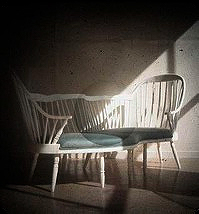

CANASTA

Hand me that spoon. Would yA?
a game of football (soccer) can be played when both sides have 10 players plus a goalie officially. it can also be played in other ways especially in a "pick-up" style potentially and probably unofficially. football (soccer) must be played with a round ball. a ball without edges and that has not been compromised or become oblong. that is one o f the laws of football (soccer).
Shall we share? Or would you like your own? I could go either way.
Hamburger, hotdog, some other things I could be talking about when talking about folding paper. But none of this is for you you idiot.